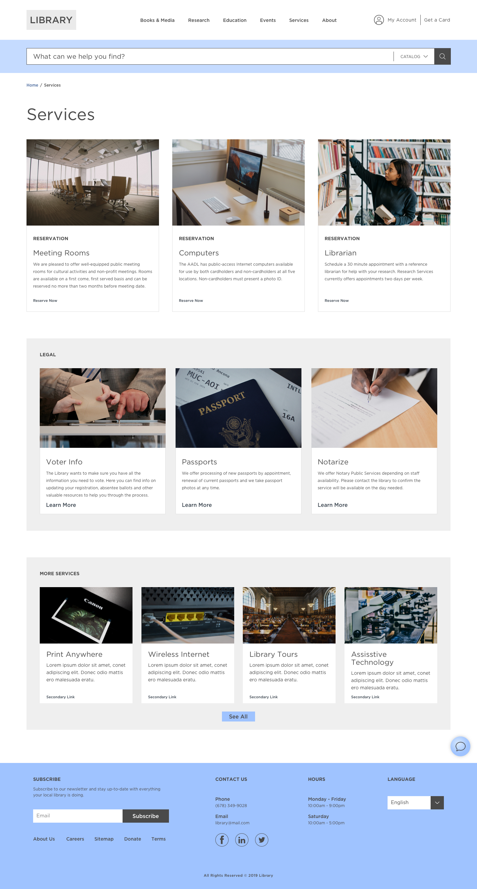
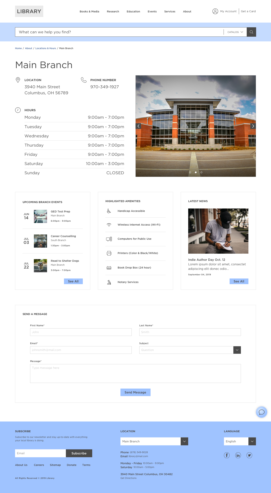
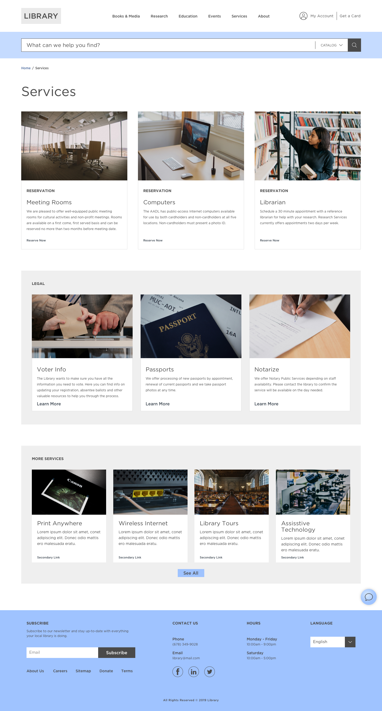
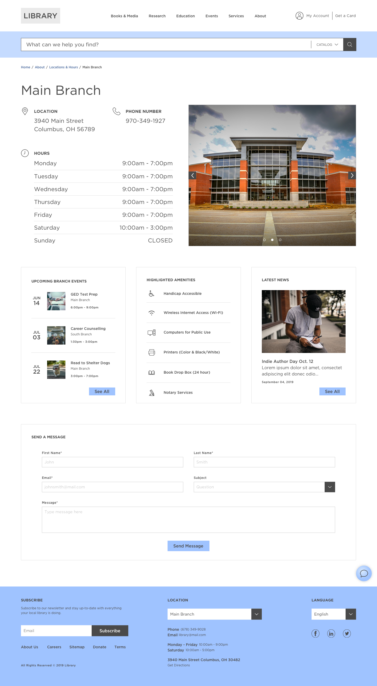
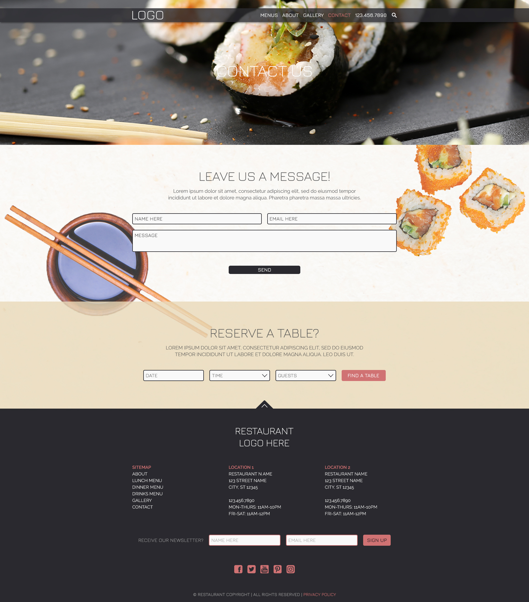
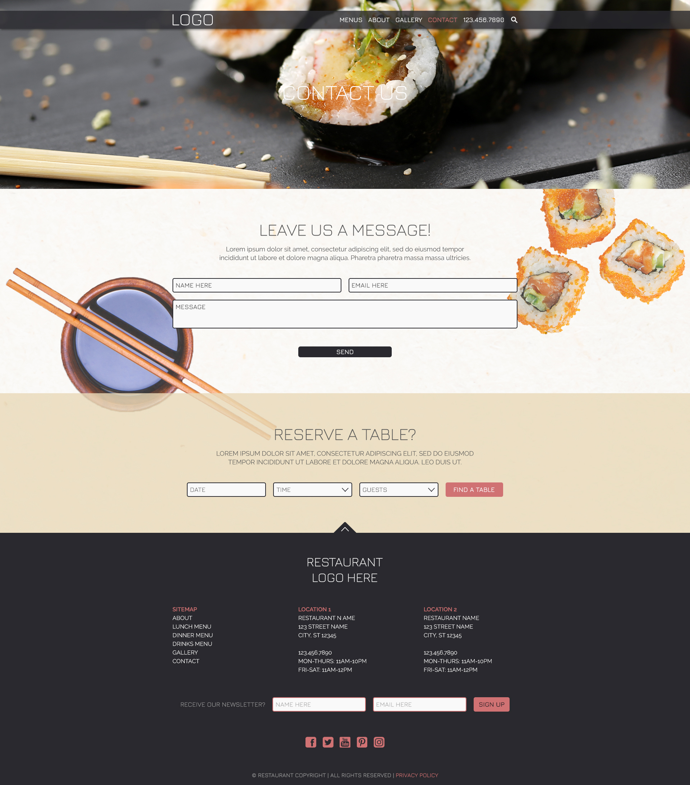

Pure Spectrum Website

Pure Spectrum is a CBD company located in Evergreen, Colorado that came to The Shipyard in need of a brand refresh. With our help, we were able to update their brand identity to give them a more competitive edge in the CBD market.
My main task was concepting and designing the new website for Pure Spectrum. After researching other CBD companies and experimenting with a couple different homepage designs, I moved forward with a single theme and built out all the supporting pages along with it.
- Company: The Shipyard
- Client: Pure Spectrum
- Category: Website Design
- Live Site: Pure Spectrum

 



 
